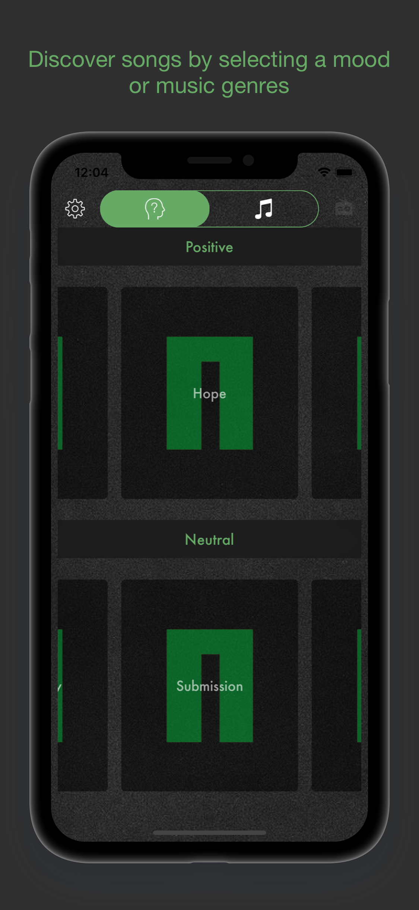

Hi there! Let me tell you some things about myself.
I started as an IBM BPM consultant in Portugal, having learned tons of stuff but using mostly IBM BPM and ODM as well. Even though I love my home country, it began to feel like it was a bit too small so I decided to take up the opportunities that presented themselves in my path and decided to start working abroad. So far, I have worked in Portugal, France and Vietnam ! And some short stays in Belgium, Malaysia and Thailand.
Recently, I started my story in mobile development, so I became a Swift developer. Eager to learn all about Swift development, so far I developped an app using the Location services of the Apple Maps API and more recently, dwelved into a music suggestion app.
On a more personal note, you should know that I’m a huge fan of sports, especially football, listening to music and learning how to play new instruments, travelling and video games. So you can expect some of my upcoming apps to be related to the things I like the most in life!
GeoBeep
Let's imagine that after a long stressing day, you forgot (again!) to buy breakfast, the sacred meal that you will want to have in the following morning, when in fact, you passed by your favorite bakery on your way home. And now you have to go out again, in order to go buy it, because you don't want to miss your meal or, worse than that, have your significant other screaming at you because you always forget it..
With GeoBeep, you no longer have to worry!
Using an alarm list, much like the native iOS Alarm app, you can now set your alarms to trigger wherever you would like! Each alarm set shows the title, description and address/point of interest that you want your phone to notify you when you reach that place.
All you need to do is set up:
- Title
- Description
- Address or Point of Interest
- A time window you would like your phone to trigger. If you reach that point outside of this time window, the alarm will not trigger.
Using the Apple Maps API, you can search the address by:
- Using the text field to type your point of interest or address.
- Use the screen to move around the map and set your desired location on a specific point on the map.
Afterwards, set the radius of action ( up to 1 kilometer ) and click Confirm.
You can define your settings for the language and unit of measure for the radius:
- Language: English, Portuguese, Spanish and French ( more languages to come )
- Unit of measure: Metres or feet
And you're all set! Put the cellphone in your pocket/bag and delegate the reminder to the phone instead of your brain :)
To try the app out, click the download link on the top of the page and leave a review. Your feedback is immensely important to better the app!
Nusic
Before I got the idea to create Nusic, I was fed up of always listening to the same songs, over and over. So, I decided to create an app that would allow me to discover new music. Because music is an essential part of my life, I wanted to make an app that adapted my music tastes to a list of moods. These moods are based on the Plutchik's wheel of emotions. So I tried "playing" with these concepts to come up with this app and voilà!
The main purpose of this app is to suggest you songs based on some specific genres or on a chosen mood. The suggested music genres for a mood will be based on your preferred genres where the app will go through every song on your Spotify account and extract how many songs you like for each genre we can find. A Spotify account is required for using this app ( Spotify Premium will allow you to listen to the songs in this app, otherwise you can use the YouTube player. More details further ahead )

After you login the first time, the app browses through your Spotify playlists to know which genres you prefer to listen to. Once that part is completed, you have 2 options: Either you choose a mood or you choose one or more music genres. The music suggestions for the mood will take into account your favorite genres, as well as the pre-defined music parameters for that specific mood. Click the button so you can proceed onto the music player.
Once you've made your choice, enjoy the suggested playlist! The songs will be presented in cards much like Tinder. You can swipe right to like a song and skip to the next song or swipe left and skip. Or use the thumbs up/thumbs down button to like the song and continue listening to it. Each song you like is added to a Spotify playlist dedicated to the songs you liked in Nusic. Show your friends what you're currently listening to using the Share function!
NOTE: Because Spotify only allows Premium users to use their music streaming service, there's an embedded YouTube player as well for Spotify Free users.
If you find a song you really like, you can refine your current playlist by tapping the card and tell the app to get a new playlist based on the current track, the current genre or the current artist for your maximum enjoyment.
Easily access your liked track list by swiping on the right border of the Song Player screen. You can see which songs you've liked so far for a mood.
You can define your settings by clicking the gear icon on the Mood or Genre Picking screen. Set if you want to use your cellular data, your preferred music player..
To try the app out, click the download link on the top of the page and leave a review. Your feedback is immensely important to better the app! If you would like to see a new feature added to the app that could improve your enjoyment, let me know through social media or send me an email.